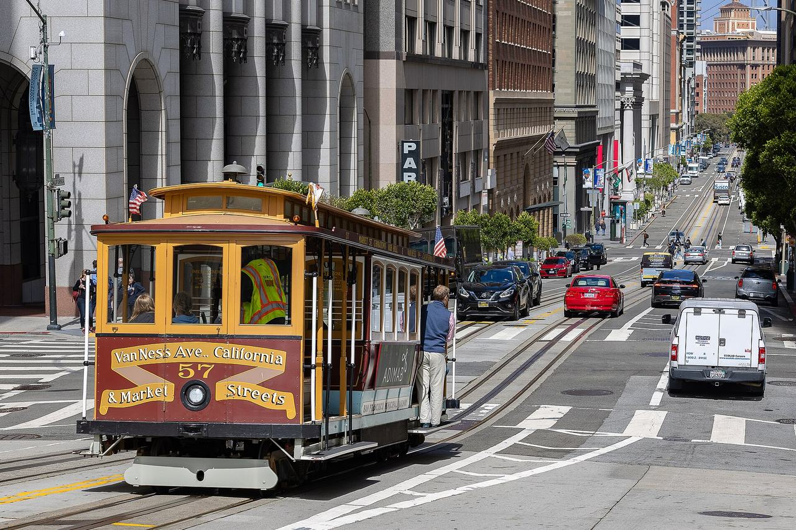

Nob Hill
The city's Nob Hill analysis neighborhood, on the ridge above Union Square. The buildings documented here so far are the ones named in the 2017 Corbett Heights historic context statement as the other work of architects who also built in that neighborhood.

Map
Named buildings and landmarks
-
1

-
2
-
3
-
4

-
5

-
6
-
7

-
8
-
9
-
10

-
11

-
12

Also here: Our Lady of Guadalupe, Verdier Mansion, Family Club, Krabbenschmit Building, Marie Antoinette Apartments, St. Luke's Episcopal Church, Arcona Apartments, Hollushickie Club, Mary Elizabeth Inn, Ross-Early Apartments, Chancellor Hotel, St. Francis Apartments, Women's Athletic Club of San Francisco, Francesca Club, Huntington Hotel, Park Lane Apartments, Brocklebank Apartments, Marines Memorial Club, Mayflower Hotel, Nob Hill Center Garage, Summit Tower, Glover Duplex.
Streets documented so far
- Bernard Street
1 building, built 1905. - Broadway
1 building, built 1907. - Bush Street
8 buildings, built 1900–1985. - California Street
1 building, built 1910. - Clay Street
1 building, built 1914. - Commercial Street
1 building, built 1985; 1 in the Commercial-Leidesdorff Conservation District. - Cosmo Place
1 building, built 1921; 1 in the Kearny-Market-Mason-Sutter Conservation District. - Florence Street
2 buildings, built 1913; 2 in the Russian Hill-Vallejo Street Crest Historic District. - Glover Street
1 building, built 1981. - Green Street
1 building, built 1900; 1 in the Russian Hill-Paris Block Architectural Historic District. - Hyde Street
1 building, built 1911. - Jackson Street
1 building, built 1916. - Joice Street
1 building, built 1907. - Jones Street
1 building, built 1915. - Larkin Street
2 buildings, built 1909–2022. - Leavenworth Street
1 building, built 1907. - Leroy Place
1 building, built 1988. - Mason Street
1 building. - Miles Street
1 building, built 1929. - Pine Street
4 buildings, built 1920–1922. - Pleasant Street
1 building, built 1984. - Polk Street
1 building, built 1909. - Post Street
1 building, built 1912; 1 in the Kearny-Market-Mason-Sutter Conservation District. - Powell Street
1 building. - Reed Street
1 building, built 1937. - Russian Hill Place
1 building, built 1916; 1 in the Russian Hill-Vallejo Street Crest Historic District. - Sacramento Street
1 building. - Stockton Street
4 buildings, built 1915–1928. - Sutter Street
1 building. - Taylor Street
1 building, built 1929. - Vallejo Street
1 building, built 1957; 1 in the Russian Hill-Vallejo Street Crest Historic District. - Van Ness Avenue
8 buildings, built 1911–1919. - Washington Street
2 buildings, built 1915.
Parks and public spaces
- Betty Ann Ong Rec Center
Neighborhood park or playground, 32,670 sq ft. - Collis P Huntington Park
Civic plaza or square, 1.3 acres. - Hooker Alley Community Garden
Community garden, 2,614 sq ft. - Ina Coolbrith Park
Neighborhood park or playground, 37,897 sq ft. - Washington & Hyde Mini Park
Mini park, 6,970 sq ft.
Historic districts here
- Chinatown Historic District
- Civic Center Historic District
- Commercial-Leidesdorff Conservation District
- Front-California Conservation District
- Kearny-Market-Mason-Sutter Conservation District
- Lower Nob Hill Apartment Hotel Historic District
- Russian Hill-Vallejo Street Crest Historic District
- San Francisco Civic Center National Historic Landmark District
- Uptown Tenderloin Historic District
Adjacent neighborhoods
Chinatown is east down the grade and Russian Hill north across Broadway. Union Square and the Financial District lie south-east and east below the hill, the Tenderloin south beyond Bush Street, and the Western Addition west past Van Ness Avenue.